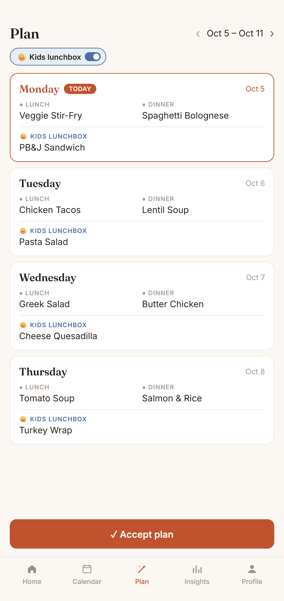

Sofra drafts a week of meals from your family's own dishes, then adds every ingredient to one shared list.

Generate a week of lunches and dinners from dishes your family cooks. Swap anything you like, then accept it to your calendar.
Each dish keeps its own ingredients. One tap adds the whole week to a single shared grocery list.
Everyone in the family sees the same list. Add extras by hand and tick items off as you go.
The Plan button tells you how many days are still open this week, and from Friday it moves on to next week.
In Sofra, plan the week, then tap "Add week's ingredients to grocery". Every planned dish's ingredients land on one shared list.
Log what you cook for a week or two, then let Sofra generate the week from those dishes, with no repeats and mixed cuisines.
Yes. Everyone in your family sees and updates the same list in real time.
Yes. Choose which meals you plan — breakfast, lunch, dinner or snack — in your meal preferences.
Free, no ads, private to your family. On iPhone and Android.